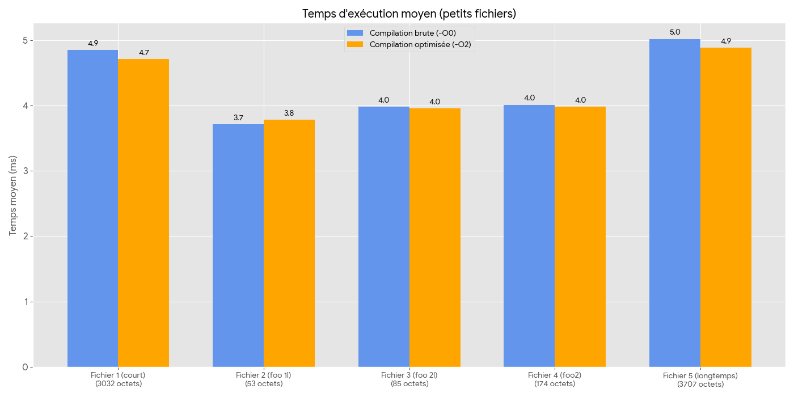
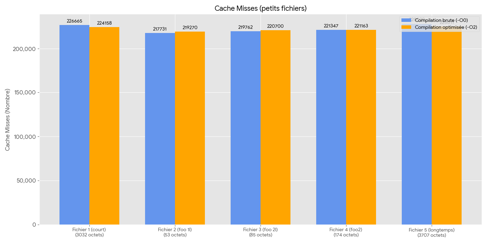
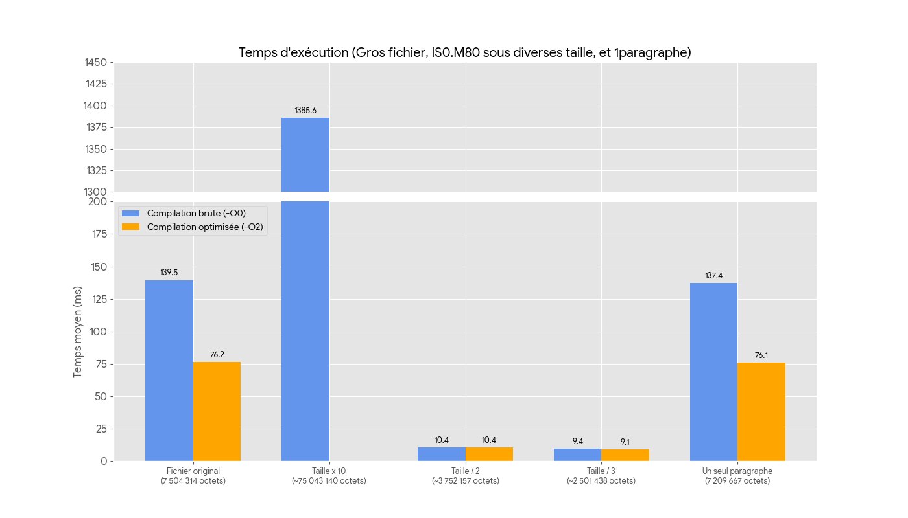
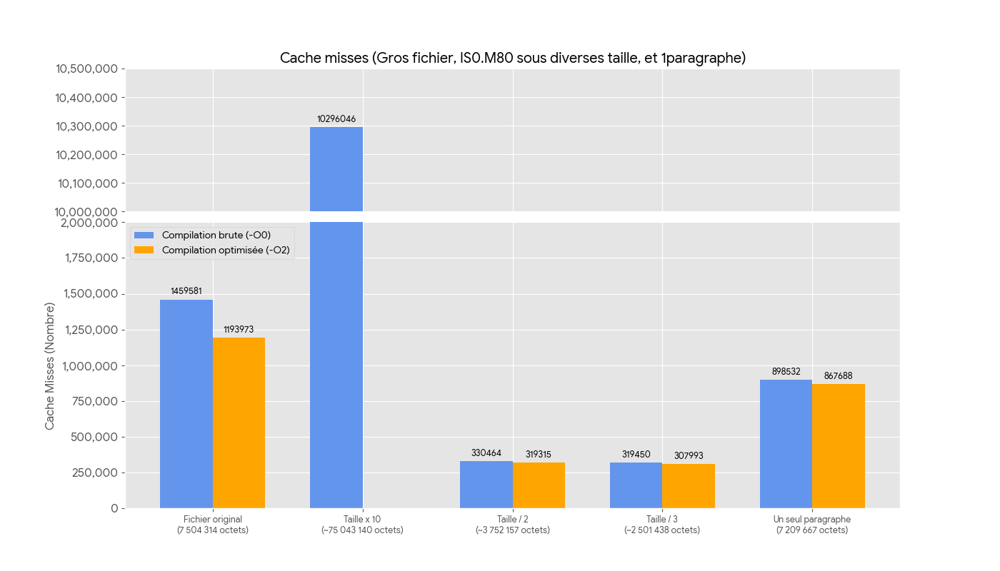
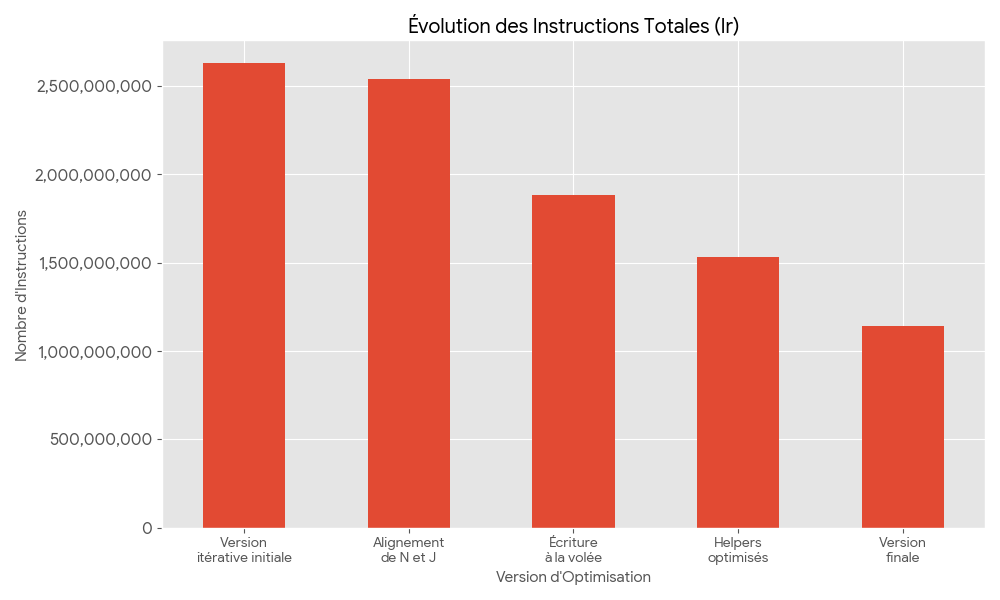
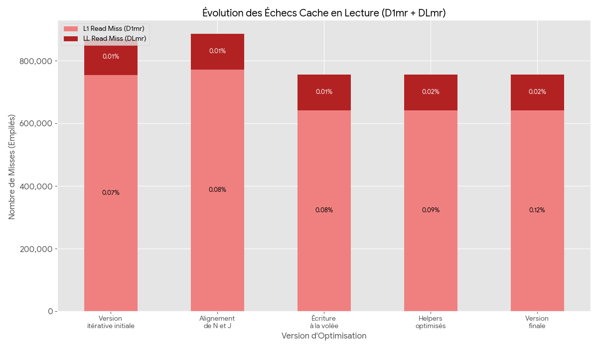
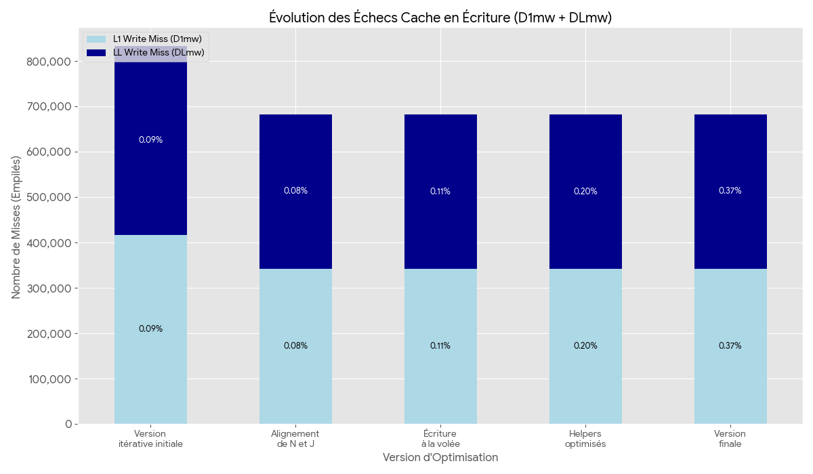

- Generated by
 1.9.8
1.9.8
|
TP AOD
Justification de texte en C et analyse de performance
|
Ce projet est une implémentation en C du problème de justification optimale de texte (formatage de paragraphes) en utilisant la programmation dynamique, dans le cadre du TP "Algorithmique et Optimisation Discrète".
L'objectif est de lire un fichier texte, après s'être assuré qu'il est au format ISO-8859-1, de le découper en paragraphes, et de justifier chaque paragraphe selon une largeur M donnée en minimisant son coût (représenté par la fonction cubique $C(D) = \sum (M - \Delta(i,k))^3$).
Le rendu est accompagné d'un rapport de quelques pages qui détaille notre approche algorithmique, les choix de conception, les attentes théoriques et une analyse succincte des résultats empiriques. Dans ce README, nous détaillons les étapes annexes, nottamment la gestion des erreurs et les tests (1), le fonctionnement général du programme (2) et son architecture (4), les outils de benchmarking utilisés (3) ainsi qu'une présentation des annexes composées principalement des mises en forme des résultats de nos benchmarks (5).
Avant d'implémenter l'algorithme de programmation dynamique, la première étape consiste à vérifier la validité du fichier et à mettre en place la gestion des erreurs, conformément aux spécifications. Ces vérifications sont réalisées en trois étapes, la première directement dans le main et les deux autres dans un fichier dédié, check.c. En effet la commande file -bi <filename> ne peut pas tout vérifier à elle seule (fichiers spéciaux, permissions, etc.) la vérification a lieu ainsi :
O_NONBLOCK afin de s'assurer :getSize() utilise fstat() pour :fileBI() crée un processus qui communiquera avec son père via deux pipes (branchées sur stdout et stderr). Il lancera la commande file -bi <filename> pour vérifier :ISO-8859-1 (ou en us-ascii). Un script de test dédié,
make tests, a été créé pour contrôler la bonne gestion des erreurs en simulant divers scénarios et fichiers de test.
Le script valide que le programme gère correctement les erreurs système et les contraintes de l'énoncé avant même de tenter de justifier un texte :
T0 Test d'usage** : Vérifie que le programme affiche une erreur "Usage" s'il est lancé sans le bon nombre d'arguments.T1 Test de fichier ISO-8859-1** : Test de succès. Vérifie qu'un fichier ISO-8859-1 valide est traité correctement et retourne une coût nul (0).T2 Test de fichier UTF-8** : Vérifie que le programme détecte (via file -bi) un fichier UTF-8 et retourne une erreur contenant "ISO-8859-1".T3 Test de fichier manquant** : Vérifie que le programme gère proprement l'erreur "No such file or directory" si le .in n'existe pas.T4 Test de fichier sans permission** : Vérifie que le programme gère proprement l'erreur "Permission denied" si le fichier n'a pas les permissions nécessaires.T5 Test de commande file -bi** : Teste la gestion des possibles échecs de la commande file -bi, ici elle n'est pas exécutable par exemple.T6 Test avec un répertoire** : Vérifie que le programme retourne une erreur s'il est lancé sur un répertoire au lieu d'un fichier.Le Makefile est le point d'entrée unique pour compiler, exécuter et analyser le projet.
make help Affiche l'aide complète des cibles make et des variables d'environnement.make ou make all Compile le programme avec les options par défaut (-g -O0). L'exécutable AODjustify est créé dans bin/.make O=2 Compile le programme en activant les optimisations (-O2).make run Exécute le programme avec les variables M et FILE (voir ci-dessous).make clean Supprime les fichiers objets (obj/), l'exécutable (bin/) et le résultat des benchmarks (benchmarks/).make tests Lance le script de test .tools/tests.sh pour valider la robustesse (voir les détails du script).make valgrind Exécute le programme sous valgrind (outil memcheck) pour détecter les fuites mémoire et les erreurs d'accès.make cache Lance le programme sous valgrind --tool=cachegrind pour l'analyse des défauts de cache.make perf Lance le programme sous perf stat (si perf est installé).make massif Lance le programme sous valgrind --tool=massif pour observer l'utilisation du tas (heap).make clean-cache Nettoie uniquement les fichiers de sortie de cachegrind et massif.Ces variables permettent de configurer les cibles make :
M=<largeur> Spécifie la largeur de justification (Défaut : 80).FILE=<chemin_fichier> Spécifie le fichier d'entrée (Défaut : data/ALaRechercheDuTempsPerdu-1paragraphe-2025-ISO-8859-1).P_LIST=<event_perf> Spécifie les événements à mesurer pour make perf (Défaut : cache-references,cache-misses,cycles,instructions).L'analyse de performance de ce projet repose sur quatre outils principaux, tous accessibles via make :
valgrind --tool=memcheck (via make valgrind)** Outil principal pour la validation de la mémoire. Nous l'avons utilisé pour détecter les fuites mémoire, principalement en simulant des erreurs au cours de l'exécution pour vérifier que tous les cas de sorties non habituelles libéraient correctement la mémoire allouée. Le programme tel que livré ne comporte ni de fuites mémoire, ni d'erreurs d'accès.valgrind --tool=cachegrind (via make cache)** C'est l'outil central de l'analyse de performance (Q5, Q6). Il simule la hiérarchie cache (L1, LL) et un prédicteur de branche. Il permet de compter précisément les accès en lecture (Dr), en écriture (Dw), les "misses" des caches de haut niveau (D1mr, D1mw), ainsi que les "misses" les plus coûteuses, celles du cache le plus bas (DLmr, DLmw).perf stat (via make perf)** Alternative "native" (noyau Linux) à cachegrind. perf ne simule pas, on peut donc s'appuyer sur ses mesures pour confirmer les résultats de cachegrind. Nous avons lancé plusieurs benchmarks en utilisant principalement les compteurs cache-references, cache-misses, cycles et instructions. C'est aussi l'outil qui nous a permis de mesurer les différents temps d'exécution pour tous les fichiers de test.valgrind --tool=massif (via make massif)** Nous n'avons pas eu le temps d'utiliser Massif.Cette section contient les résultats bruts et les graphiques utilisés pour l'analyse de performance du rapport (Q5, Q6).
Voici un extrait de la sortie de cachegrind pour le fichier principal des benchmarks (compilé en -O0). Ce fichier n'est la base de notre analyse de cache, nous lui avons préféré la version ISO-8859-1.M80 car elle a l'avantage de posséder une structure plus réaliste (plusieurs paragraphes de tailles variées) tout en conservant la même taille que le fichier principal (1paragraphe).
Les fichiers bruts sont disponibles dans les annexes rapport/annexes/cachegrind, voici par exemple le résultat final : logs.
Ces graphiques répondent directement à la question 6. Ils comparent les performances (temps et "misses") entre la compilation brute (-O0) et optimisée (-O2) sur tous les fichiers de tests fournis (dans le répertoire data/). Au vu des différences importantes d'échelles nous les avons séparés en deux catégories : les petits et les gros fichiers. Pour ajouter un peu de piment, nous avons comparé les résultats du fichier principal (1paragraphe) avec une déclinaison du fichier ISO-8859-1.M80 (Taille originale, taille / 2, taille / 3, taille x 10).


Ces graphiques démontrent la complexité linéaire $O(N)$ du programme et isolent le coût du malloc/memset en comparant le fichier original (multi-paragraphes) au fichier "Un seul paragraphe" (mono-paragraphe).


Ces graphiques (basés sur le fichier 1paragraphe) illustrent l'impact de chaque optimisation successive, depuis la version "itérative initiale" jusqu'à la "version finale".
Ces graphiques montrent la réduction drastique du travail total effectué par le CPU.

Ces graphiques prouvent que, bien que les accès aient été massivement réduits, les défauts de cache (le "noyau dur" incompressible) restent stables, confirmant que l'algorithme est "memory-bound".

